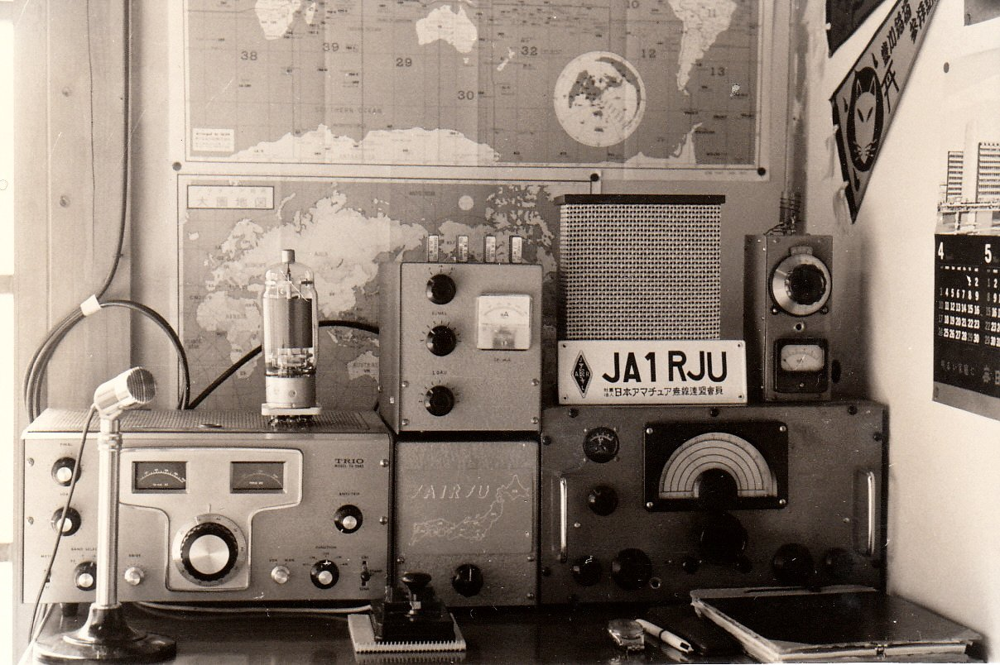
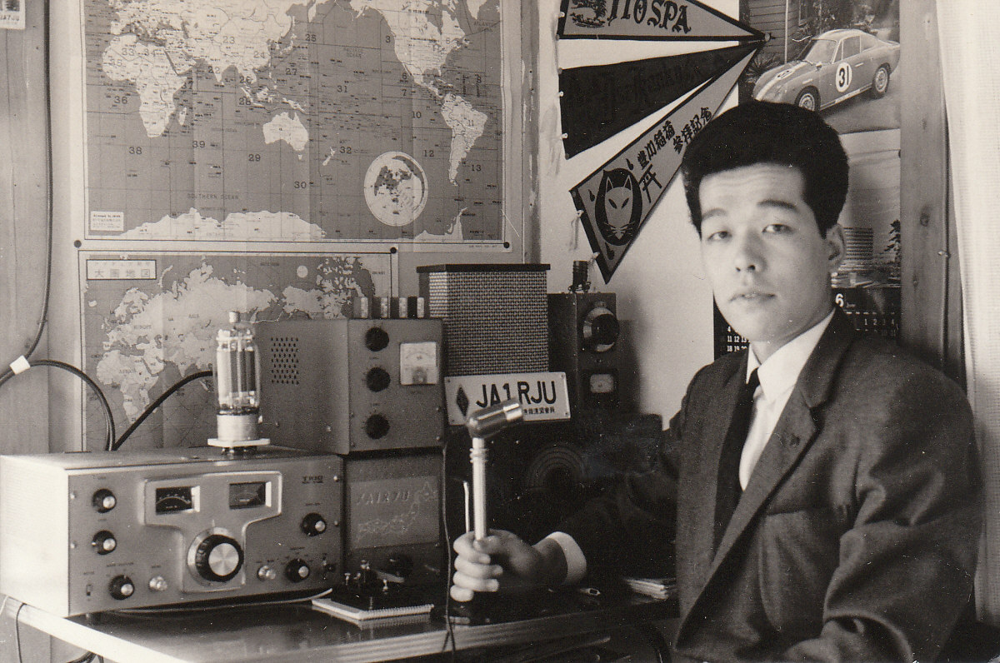

1965年の6m入感状況
[DX Report Jan-Dec.1965]
TIME:JST(UTC+0900)
Report from JA1RJU (PM95sq)
◎1964年(昭和39年)3月31日以降、VKの6mバンドは52-54MCに縮小されてしまったが、1965年10月31日
まで50.240MCにJAを相手にしてくれたVK4NGも遂に52.200MCにQSYしてしまった。
この時期のオーバーシーズのDXはEsシーズンに入感するKR6(沖縄)とHM(韓国)程度となってしまった。
◎1965年5月3日にJA1RJUのHF帯の電話モードはAMからSSBに変更された。

01-31.Jan.1965
◎50MCでは国内外のDXとのQSOは無し。
01-28.Feb.1965
◎50MCでは国内外のDXとのQSOは無し。
01-31.Mar.1965
◎50MCでは国内外のDXとのQSOは無し。
01-30.Apr.1965
◎50MCでは国内外のDXとのQSOは無し
01-31.May.1965
◎1965年5月3日にJA1RJUのHF帯の電話モードはAMからSSBに変更、運用された。
初QSOは14MCのJA1EZT(東京・杉並)だった。使用した送信機はTORIO-TX388(2E26×1=10W機)。
◎50MCでは国内外のDXとのQSOは無し。


1965年5月からHF帯はSSBに変更された。RIGはTRIOのTX-388(2E26s)10W機。
01-30.Jun.1965
◎50MCでは国内外のDXとのQSOは無し。
01-31.Jul.1965
◎50MCでは国内外のDXとのQSOは無し。
01-31.Aug.1965
◎50MCでは国内外のDXとのQSOは無し。
01-30.Sep.1965
◎50MCでは国内外のDXとのQSOは無し
01-31.Oct.1965
◎50MCでは国内外のDXとのQSOは無し
01-30.Nov.1965
◎50MCでは国内外のDXとのQSOは無し。
01-31.Dec.1965
◎50MCでは国内外のDXとのQSOは無し。
|